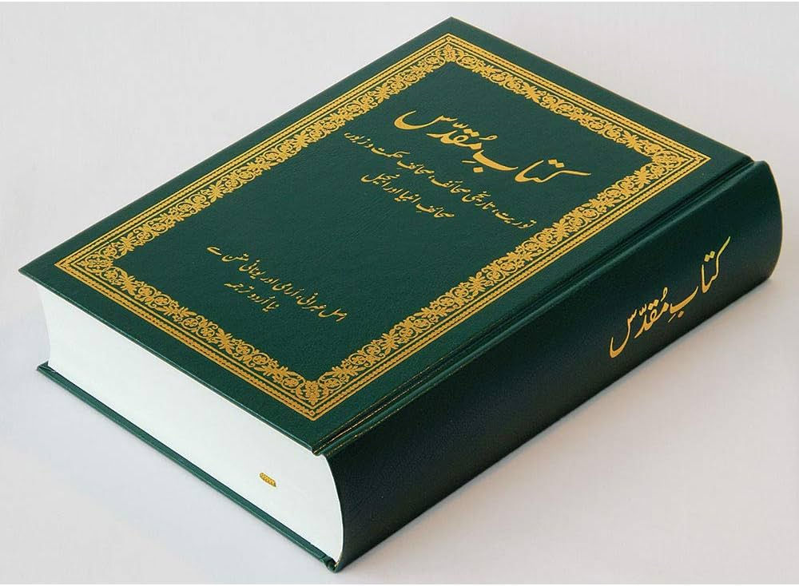

ہم بائبل کیوں پڑھتے ہیں؟
یسوع کا پیروکار وہ شخص ہے جو:
- یقین ہے کہ یسوع مسیح خدا کا بیٹا ہے۔
- یسوع کو نجات دہندہ کے طور پر قبول کیا ہے۔
- یسوع کی تعلیمات اور ہماری زندگیوں کے لیے اس کے منصوبے پر عمل کرتے ہوئے زندگی گزارنے کا فیصلہ کیا ہے۔
یسوع کا پیروکار وہ شخص ہے جو یہ مانتا ہے کہ یسوع مسیح خدا کا بیٹا ہے اور جس نے اسے نجات دہندہ کے طور پر قبول کیا ہے اور یسوع اور ہماری زندگیوں کے لیے اس کے منصوبے پر عمل کرتے ہوئے زندگی گزارنے کا فیصلہ کرتا ہے۔
وہ جانتے ہیں کہ، اگر وہ واقعی خُدا کو اپنے ذاتی طریقے سے جاننا چاہتے ہیں جس کا اُس نے ہمارے لیے ارادہ کیا ہے، تو اُنہیں بائبل کو پڑھنے کی ضرورت ہے۔
واقعی ایسے لوگ بننے کے لیے جو یسوع کی پیروی کرتے ہیں اور اُس طریقے کے مطابق زندگی گزارتے ہیں جس طرح اُس نے سکھایا تھا جب وہ زمین پر تھا، ہمیں بائبل کو پڑھنے کی ضرورت ہے۔ ہمیں یہ جاننے کی ضرورت ہے کہ ہم کیوں یسوع کو خدا کا بیٹا مانتے ہیں اور ان واقعات کے بارے میں جن کی وجہ سے خدا نے اسے زمین پر ہمارے نجات دہندہ کے طور پر بھیجا۔
اس چھوٹی سی کتاب کا مقصد آپ کو یہ سمجھنے میں مدد کرنا ہے کہ بائبل کس قسم کی کتاب ہے:
- یہ کیسے لکھی گئی۔
- بائبل میں کہانی یا حوالہ کیسے تلاش کیا جائے۔
- بنیادی کہانی جو بائبل بتاتی ہے۔
خُدا آپ کی روح کو برکت دے گا اور آپ کو قریب لائے گا جب آپ بائبل پڑھنے کے ذریعے اُسے جانیں گے!